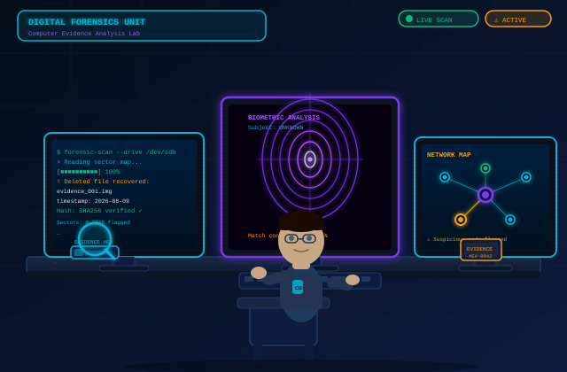

My Skills
From hardware diagnostics to software troubleshooting, I am building hands-on IT repair skills in school.
View my skillsComputer repair, troubleshooting, and IT support
I am Lemar Woods, a full-time IT student learning computer repair, hardware diagnostics, and technical support. This site documents my skills, coursework, and tech journey.
I enjoy learning how systems work behind the scenes and how practical support skills can make a real difference for everyday users.

From hardware diagnostics to software troubleshooting, I am building hands-on IT repair skills in school.
View my skillsI am a full-time IT student pursuing an Associate's degree in Information Technology while working on real-world tech skills.
Read more about meMy goal is to become a certified IT support technician and use my skills to help people solve everyday tech problems.
Learn about my journey